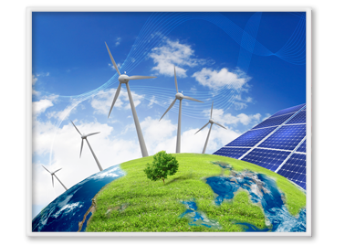

Fuentes de energía y su transformación
La energía provoca todos los cambios que se dan en el universo, como los físicos y químicos de la materia. Cuando el viento mueve las hojas, hay energía. Si ilumina una bombilla o nace una nueva estrella, es gracias a la energía.Guía del profesor
Recursos
00 - La evolución histórica de las fuentes de energía
Secuencia de imágenes que ayuda a analizar la evolución del consumo de energía y la necesidad de avanzar hacia un modelo de producción y consumo energético sostenible

01 - Características de la energía
Actividad que consiste en completar un texto que relaciona las características de la energía

02 - Refuerza tu aprendizaje: ¿Qué es la energía?
Actividades sobre ¿Qué es la energía?
03 - La energía potencial y cinética
Animación que muestra que la energía mecánica es la suma de la energía cinética y la energía potencial
04 - La energía nuclear
Secuencia de imágenes que describe la estructura física del átomo, la energía nuclear y las centrales nucleares
05 - La energía: tipos y origen
Secuencia de imágenes que muestra de dónde proviene la energía y los diferentes tipos en los que se manifiesta

06 - Define los tipos de energía
Actividad que permite relacionar los tipos de energía con su definición

07 - Refuerza tu aprendizaje: La energía eléctrica
Actividades sobre La energía eléctrica

08 - Identificación de los tipos de energía
Actividad que propone un experimento para aprender a reconocer diferentes tipos de energía
09 - Identifica las fuentes de energía
Actividad que plantea clasificar las fuentes de energía en renovables y no renovables
10 - La energía solar
Interactivo que sirve para comprender la importancia que tiene la energía solar para nuestro planeta

11 - Conoce la energía solar
Actividad que permite repasar las características de la energía solar y sus aplicaciones
12 - Energía eólica: molino
Animación que muestra el funcionamiento de un molino movido por la energía del viento

13 - Conoce la energía eólica
Actividad que plantea cuestiones sobre las características de la energía eólica tras el visionado de una animación
14 - La energía geotérmica
Animación que muestra el proceso de obtención de electricidad en una central geotérmica
15 - El petróleo
Animación que realiza la descripción geológica del proceso de formación del petróleo

16 - Comprende las fuentes de energía
Actividad que permite identificar las características de las principales fuentes de energía

17 - ¿Qué sabes sobre la energía nuclear?
Actividad para conocer el origen y las características de la energía nuclear
18 - Fuentes y tipos de energía
Interactivo que trabaja las fuentes y tipos de energía renovables y no renovables

19 - Comparación de las fuentes de energía
Actividad que propone el desarrollo de las destrezas para comparar las diferentes fuentes de energía renovable

20 - Refuerza tu aprendizaje: Las fuentes de energía
Actividades sobre Las fuentes de energía
21 - Competencias: reconocimiento de las propiedades de la energía
Actividad que propone realizar el procedimiento de reconocimiento de las propiedades de la energía
22 - Competencias: valoración del agua como fuente de energía
Actividad que propone realizar el procedimiento de descubrir el uso energético del agua en las centrales eléctricas

23 - Competencias: realización de un plan de ahorro energético
Actividad que propone realizar un plan de ahorro energético para implementar en casa

25 - Evaluación
Evalúa tus conocimientos sobre el tema Fuentes de energia y su transformación